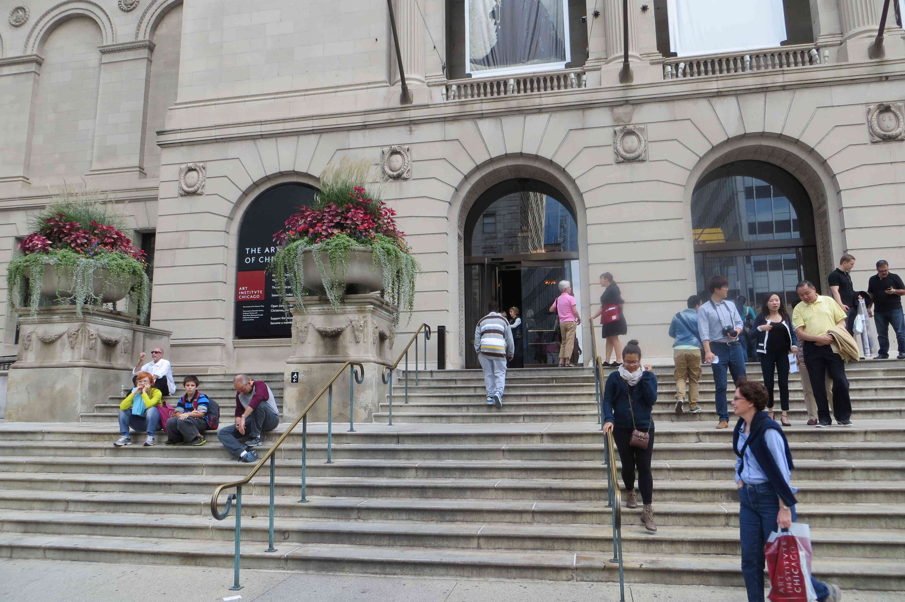
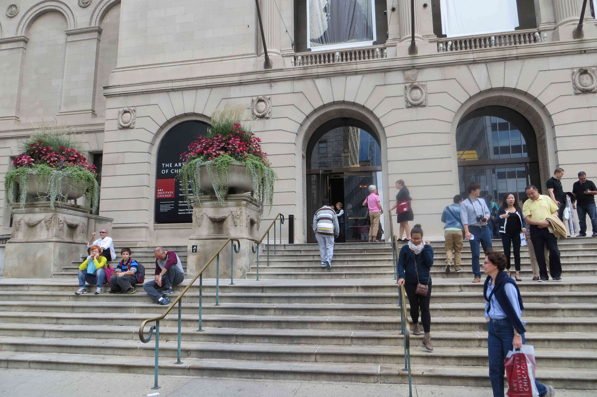

Dennis Toppel: Single Page Web Presence
I frequently take photographs of natural and urban environments, as that kind of photography is a bit of a passion of mine. I hope to have a portfolio of the things I collect and create on this page for all to easily access.
My name is Dennis Toppel, and this is my Web Presence. I currently am a student at IIT, and am taking a Web Design Class. I have a GitHub page which I post my work and updates on said work, and any future projects will also be on my that page too.
Below is a collection of various photos I have taken. These photos were all taken in the city of Chicago. I wanted to capture various environments that exist throughout the city, showcasing how the experience of Chicago as a city varies from where you are in the city.
Photography


 
